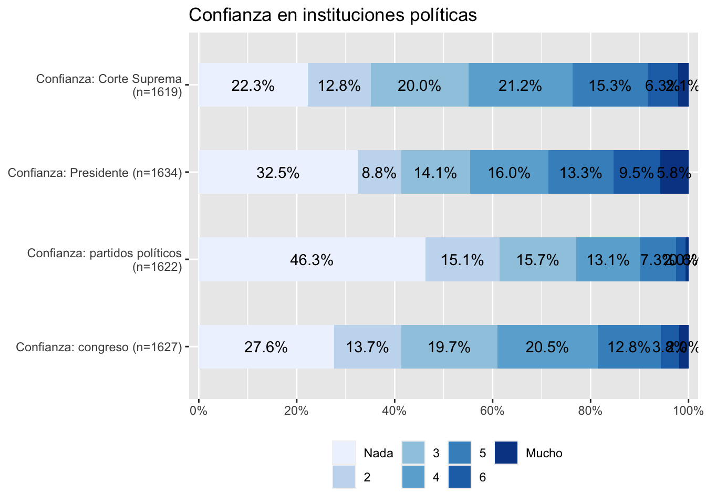

The downloaded binary packages are in
/var/folders/qn/q6_1kmwd30519lg23mpn5db40000gn/T//RtmpudtIPf/downloaded_packagesReligión en Chile y la confianza en el sistema político
Introducción
En el marco de los problemas que presenta el sistema político chileno, distintos estudios han explorado factores que influyen en el buen funcionamiento de las instituciones democráticas. En ese contexto, como señalan Ignacio Sepúlveda-Rodríguez and Luis Garrido-Vergara (2022):
Aunque los sistemas democráticos gocen de amplia popularidad en la actualidad, no se encuentran exentos de crisis. Estas crisis se han propagado a partir de la pérdida de legitimidad de los sistemas políticos, en particular debido a la erosión de la confianza entre gobernantes y gobernados. (p. 2)
En relación a lo anterior, la poca confianza en las instituciones políticas surge como un factor decisivo entre las crisis y problemáticas que afectan al sistema político. Como indica Mauricio Morales Quiroga (2020):
una crisis de confianza caracterizada por el desplome de las instituciones, ayuda a entender la crisis de participación y la posterior crisis de representación. En el caso de Chile, el deterioro ha sido muy pronunciado y, en algunos casos, prácticamente definitivo. (p. 20)
Bajo ese clima de desconfianza, se considera que existen distintos elementos influyentes en la magnitud que puede adquirir. Como se explora en el estudio realizado por Fabian Riffo et al. (2019), la zona de residencia de los ciudadanos, la pertenencia a distintos grupos étnicos, el nivel socioeconómico y el grupo etario al que pertenecen son variables que actúan como determinantes en la variabilidad que puedan adquirir los niveles de confianza respecto a las instituciones del país. En ese mismo articulo se destaca la relevancia que adquiere la confianza institucional para la cohesión social, siendo esta entendida como un atributo de la sociedad necesario para su bienestar, en donde se manifiesta un grado de confianza, inclusión y motivación para participar que se relaciona con actitudes, percepciones y normas conjuntas que poseen los actores sociales, viéndose expresada en las interacciones verticales y horizontales de los miembros de la sociedad Annette Schnabel et al. (2014)
Siguiendo con el concepto de cohesión social, desde la sociología se ha estudiado la forma en que la religión se relaciona con la cohesión social. Como señala Annette Schnabel et al. (2014), desde los trabajos de Emile Durkheim sobre religión se desarrolla una propuesta en la que el autor establece que además de ser un hecho social, la religión es una base de construcción de solidaridad social e integración.
Volviendo al tema de las problemáticas del sistema político, estas se pueden vincular con el fenómeno de la religión. Como expresa Evguenia Fediakova (2002), el factor religioso es determinante en la política, pese a que algunas comunidades puedan poseer cierto hermetismo no se ven exentas de incidir en la política y en la cultura. Por otro lado la propuesta investigativa de Ignacio Cáceres (2022) plantea explorar las dimensiones tanto horizontal como vertical de la cohesión social y como impacta la religión en estas dimensiones. De este modo se vincula con la problemática central de esta investigación, ya que como establece Ignacio Cáceres (2022), por un lado en la dimensión horizontal de la cohesión social, se explora la confianza social en la que se espera que la participación en servicios religiosos fomente la confianza en el otro, como consecuencia de desarrollarse en espacios donde el conocimiento y colaboración entre actores son fundamentales. Por otro lado en la dimensión vertical se espera que en forma de su relacionamiento con la política, los grupos religiosos presenten mayores niveles de confianza hacia la política y que posean una actitud cívica mayor en comparación a quienes no pertenecen o se identifican con alguna religión; esto debido a que como la misma investigación expone, “la religión provee a las personas de un marco interpretativo desde el cual posicionarse en la esfera política” (Ignacio Cáceres 2022, 156). De este modo se explicaría una incursión en el mundo político de parte de personas religiosas como consecuencia de unos valores sociales mucho más rígidos y establecidos.
Considerando lo anteriormente expuesto, se propone como objeto central de esta investigación poder observar la confianza hacia el sistema político de parte de quienes profesan o se identifican con alguna corriente religiosa para compararla con los niveles de confianza de quienes no son religiosos. Partiendo de la hipótesis proveniente de la propuesta de investigación de Ignacio Cáceres (2022), en la que se espera que quienes se identifican con alguna religión presenten mayores niveles de confianza en la política en comparación a quienes no lo hacen. De este modo se trabajará con la base de datos de la encuesta LAPOP Barómetro de las Américas, en su medición del año 2023 en Chile.
Análisis descriptivo
A continuación se presentan tablas y gráficos con información descriptiva de las variables seleccionadas para la investigación, estas figuras contienen información univariada.
Tablas descriptivas generales
============================================
Statistic N Mean St. Dev. Min Max
--------------------------------------------
conf_congreso 1,627 2.964 1.616 1 7
conf_partpol 1,622 2.283 1.479 1 7
conf_presidente 1,634 3.206 1.956 1 7
conf_cortsup 1,619 3.216 1.643 1 7
conf_mun 1,626 3.970 1.693 1 7
apoyo_sistpol 1,606 4.111 1.815 1 7
respeto_istpol 1,626 4.330 1.891 1 7
--------------------------------------------
The downloaded binary packages are in
/var/folders/qn/q6_1kmwd30519lg23mpn5db40000gn/T//RtmpudtIPf/downloaded_packages| var | label | n | NA.prc | mean | sd | range | |
|---|---|---|---|---|---|---|---|
| 2 | conf_congreso | Confianza: congreso | 1627 | 1.5728978 | 2.963737 | 1.6161205 | 6 (1-7) |
| 6 | conf_partpol | Confianza: partidos políticos | 1622 | 1.8753781 | 2.282984 | 1.4792645 | 6 (1-7) |
| 7 | conf_presidente | Confianza: Presidente | 1634 | 1.1494253 | 3.205630 | 1.9558677 | 6 (1-7) |
| 3 | conf_cortsup | Confianza: Corte Suprema | 1619 | 2.0568663 | 3.216183 | 1.6434941 | 6 (1-7) |
| 5 | conf_mun | Confianza: municipalidad | 1626 | 1.6333938 | 3.969865 | 1.6926126 | 6 (1-7) |
| 1 | apoyo_sistpol | Apoyo a las instituciones políticas | 1606 | 2.8433152 | 4.111457 | 1.8146255 | 6 (1-7) |
| 10 | respeto_istpol | Respeto a las instituciones políticas | 1626 | 1.6333938 | 4.330258 | 1.8911374 | 6 (1-7) |
| 9 | religion | religion | 1602 | 3.0852995 | 1.658552 | 0.9115224 | 3 (1-4) |
| 8 | genero | genero | 1643 | 0.6049607 | 1.502130 | 0.5001477 | 1 (1-2) |
| 4 | conf_inst | confianza en instituciones | 1570 | 5.0211736 | 2.365605 | 1.0385012 | 4 (1-5) |
Gráfico “confianza en instituciones políticas”

En base a esta primera tabla y gráfico se puede indicar que en primer lugar sobre las variables de confianza en las distintas instituciones del sistema político, si se considera la escala de estas variables donde 1 significa nada de confianza y 7 mucha confianza, se puede observar en base a los promedios de estas variables que la confianza en las instituciones en general no es alta.
De manera específica se observa que instituciones como los partidos políticos y el congreso son las que presentan niveles de confianza más bajos, con una media de 2,28 y 2,96 respectivamente. Siguiendo con esto tambien se identifica que en este panorama de poca confianza hacia las instituciones, los municipios son quienes se ven mejor evaluados por parte de los ciudadanos, presentando una media de 3,96 lo que puede indicar una confianza menos degradada en comparación al resto de organismos del sistema politico.
Por otro lado respecto al apoyo y respeto al sistema político chileno, en base a las medias de estas variables que presentan valores de 4,11 y 4,33 respectivamente, se puede indicar que presentan valores más altos en comparación a las variables de confianza, pero no son diferencias totalmente distantes. Pese a esto a modo de interpretación se puede señalar que si bien la confianza hacia las distintas instituciones politicas se ve afectada, esto no ha significado que la ciudadanía no respete el sistema político actual del país, sin embargo esto no niega que pueda existir un descontento con este que se ve expresado fundamentalmente en una baja confianza hacia las instituciones políticas.
Gráfico y tabla sobre religiones
x <categorical>
# total N=1653 valid N=1602 mean=1.66 sd=0.91
Value | N | Raw % | Valid % | Cum. %
------------------------------------------------------
religión cristiana | 899 | 54.39 | 56.12 | 56.12
creyente no religioso | 484 | 29.28 | 30.21 | 86.33
religión no cristiana | 86 | 5.20 | 5.37 | 91.70
no creyente | 133 | 8.05 | 8.30 | 100.00
<NA> | 51 | 3.09 | <NA> | <NA>
Observando la anterior tabla y gráfico se puede señalar que hay una presencia considerable de personas que se indetifican con una religión, de esta manera la mayoría se categoriza en una religión cristiana, conformando el56,1% de la muestra (817 casos). Siguiendo con esto quienes son creyentes pero no se identifican con ninguna religión representan la segunda mayoría, con un total de 459 casos representan el 31% del total, de esta manera quienes se identifican con una religión no cristiana y quienes no son creyentes representan una minoría, haciendo en conjunto un total de 201 casos, valor que no supera a ninguna de las categorias anteriores.
Atendiendo a este primer análisis que se centra en la descripción de las variables de manera individual, el siguiente paso constituye un análisis que se centre en la asociación de las variables, centrado en la hipotesis central de esta investigación.
References
Annette Schnabel, Annette Schnabel, Florian Groetsch, and Florian Groetsch. 2014. “In God We Trust – the Role of Religion for Cohesion and Integration in Current European Societies.” European Journal of Cultural and Political Sociology 1 (4): 375–98. https://doi.org/10.1080/23254823.2015.1057752.
Evguenia Fediakova. 2002. “Separatismo o Participación: Evangélicos Chilenos Frente a La Política.” Revista De Ciencia Politica 22 (2): 32–45. https://doi.org/10.4067/s0718-090x2002000200003.
Fabian Riffo, Fabian Riffo, Daniela Pérez, Daniela Pérez, César Antonio Salazar Espinoza, César Salazar Espinoza, César Antonio Salazar Espinoza, Andrés A. Acuña-Duarte, Andrés A. Acuña-Duarte, and Andrés A. Acuña Duarte. 2019. “Qué Influye En La Confianza En Las Instituciones? Evidencia Empírica Para Chile.” Revista Facultad de Ciencias Económicas 27 (2): 83–104. https://doi.org/10.18359/rfce.3517.
Ignacio Cáceres. 2022. “Reincorporando La Religión En La Comprensión de La Cohesión Social En Latinoamérica.” Revista Temas Sociológicos, no. 30 (July): 137–67. https://doi.org/10.29344/07196458.30.3194.
Ignacio Sepúlveda-Rodríguez, and Luis Garrido-Vergara. 2022. “Satisfacción Con La Democracia y Legitimidad En Chile.” Revista de Sociología 37 (2): 1–15. https://doi.org/10.5354/0719-529x.2022.69099.
Joseph Chan, Joseph Chan, Joseph Chan, Joseph Chan, Ho-Pong To, Ho-Pong To, Elaine Chan, and Elaine Chan. 2006. “RECONSIDERING SOCIAL COHESION: DEVELOPING A DEFINITION AND ANALYTICAL FRAMEWORK FOR EMPIRICAL RESEARCH.” Social Indicators Research 75 (2): 273–302. https://doi.org/10.1007/s11205-005-2118-1.
Mauricio Morales Quiroga. 2020. “Estallido Social En Chile 2019: Participación, Representación, Confianza Institucional y Escándalos públicos” 33 (98): 3–25. https://doi.org/10.15446/anpol.v33n98.89407.